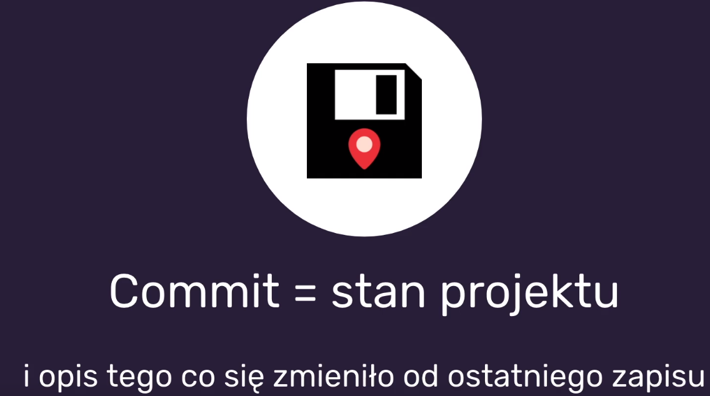
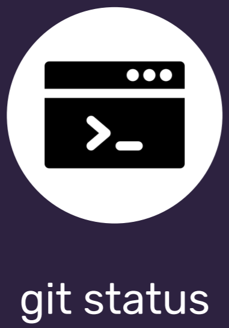
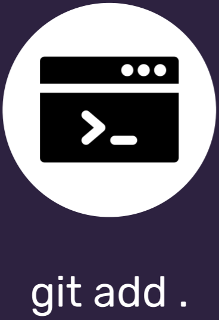
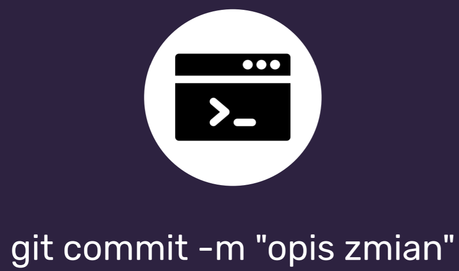

Tydzień IV
GIT
Żeby założyć repozytorium wpisujemy w CMD komendę "git init"
Poprzez "git init" tworzymy ukryty katalog, którego nie widać
Commit
Polecenie "git status" daje nam informacje
Możliwość dodawania plików, które zostały zmienione
Żeby zapisać (zacommitować) używamy poniższej komendy
Polecenie pozwalające nam srpawdzić zmiany to: